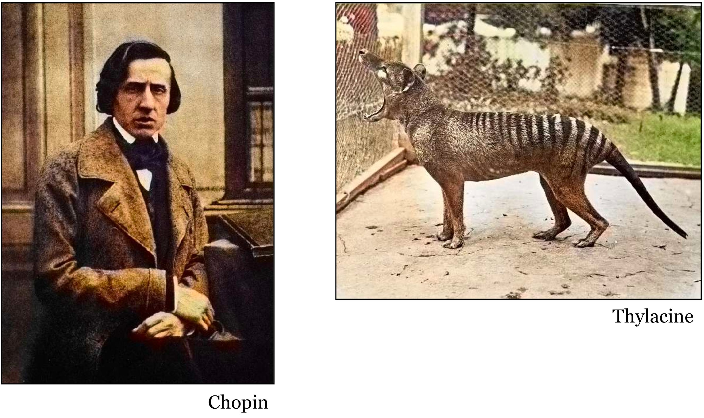
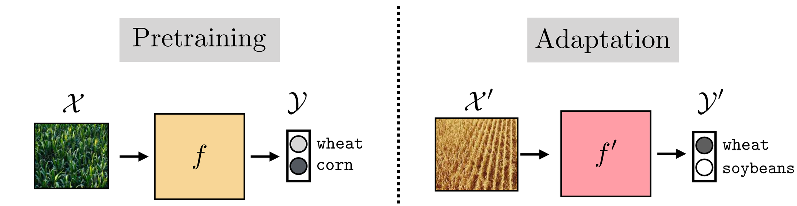
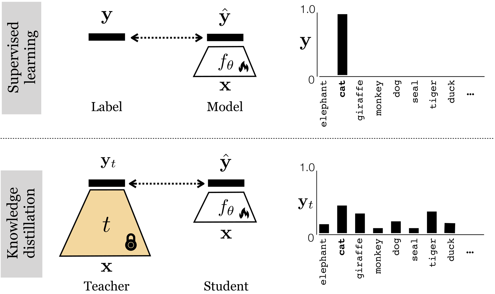

Why models fail in the real world
The natural world has its own “parameters”: light, weather, distance, fog, rotation. One street corner in San Francisco looks very different by day and by night. A model only knows the settings its training data happened to cover.
Chapter 35 of Foundations of Computer Vision names two of the reasons models fail. The first is an incomplete dataset. A colorization network trained on ImageNet photos was later used on old photographs, which looked nothing like its training set (Figs. 35.1 and 35.2). The second is a misapplied parameter: a setting that was right for the training data is wrong for the data in use (Fig. 35.3).

This is where dataset bias comes in. Bias is present in all datasets. Each dataset has a recognizable style, so a model learns that style along with the task (Fig. 35.8, from Torralba and Efros, CVPR 2011).
Getting better data
More data is not always better
Collecting more of the same thing has three costs. Redundancy: many near-identical highway frames add storage, processing and training costs but no new information. Class imbalance: a driving dataset can hold hundreds of thousands of annotations for cars and adult pedestrians, and far fewer for the safety-critical edge cases. Harder discovery: the more raw hours you record, the deeper the rare, high-value frames (a deer crossing the road) are buried.
Data augmentation
Augmentation makes new training examples from old ones while keeping the label: mirror, crop, rotate, color shift, blur, noise, darken, cut out, zoom out. Each version of the cat photo is still a cat.
Some augmentations are not safe. Mirroring a cat leaves a cat, but mirroring a “b” makes a “d”, and turning a “6” upside down makes a “9” (Ch. 36). An augmentation has to be physically plausible, or in line with your dataset. Kinect body tracking was trained on synthetic 3D people (Shotton et al., CVPR 2011). A mirrored pose is still a body. A knee bent the wrong way is not.
Simulating a natural world
The tools form a ladder, from editing real images to generating whole worlds:
- Physics-based image augmentation: edit real images (for example, Albumentations).
- Physics engines: how things move, with gravity, collisions and friction (for example, MuJoCo).
- Renderers: CARLA (Dosovitskiy et al., 2017) and AirSim (Shah et al., 2017).
- Domain simulators: ready-made worlds.
- Generative world models: NVIDIA Cosmos (2025) generates physically consistent video.
Two examples sit at opposite ends. To solve a Rubik’s Cube with a robot hand, OpenAI trained in a fully simulated world: a MuJoCo physics engine, a Unity renderer, and automatic domain randomization that keeps widening the physics and visual ranges. The labels come free from the simulator. Foggy Scene Understanding (Sakaridis, Dai and Van Gool) uses physics only, with no engine and no renderer. A clear photo J becomes a foggy image with I = J·t + A(1−t), where t is the transmission and A the airlight. The labels are inherited from the clear photo.
Keep this in the back of your mind. More and better data helps, but can researchers develop algorithms that need less data?
Labels
Why talk about big data at all? Data collection is slow and costly, and the data can be noisy. That expense is what motivates innovation, and there is room for it here.
The ground truth itself can be wrong. Mislabeled test data can inflate a model’s measured performance. Northcutt, Athalye and Mueller (NeurIPS 2021) found that at least 6% of ImageNet validation labels are wrong, and on average at least 3.3% across ten popular test sets. You can browse them at labelerrors.com.
Annotators need onboarding: rules, then a small batch, then gold items with known answers, then retraining or removal. They can work on your own team’s platform, with a crowd, or through a labeling company. A labeling workflow, following Scale AI’s documentation, runs from a defined task and a taxonomy with guidelines, through pre-annotation by a model, boxes tight to the pixel edges, attributes per object and special classes for edge cases, to review with precision, recall and a quality score per tasker. Taskers and reviewers label. The customer, subject experts, quality staff and automated checks audit.
Some labeling tasks take forever, such as judging a multi-turn conversation. A synthetic generator can save time, cost and expert resources. Self-Instruct (Wang et al., ACL 2023) started from 175 seed tasks written by people and generated 52K instructions.
Finding and checking a dataset
Start with papers that do what you want to do, and follow their data to Hugging Face, Kaggle, or the dataset’s own site. Then check it before you trust it. When the model and the label disagree, sometimes the model is wrong, and sometimes the ground truth is.
Methods for checking
- Manually sample and look at examples.
- Use a model you already trust to check the labels.
- Look at where models and people disagree.
- Run similarity checks to find copies. In the slide’s example, using the cosine similarity of small gray thumbnails as a stand-in for a network’s features, a resized copy scored 0.99, a re-saved JPEG and a color shift 1.00, a crop 0.78, and an unrelated image −0.24.
What to keep in mind when splitting
WLASL, a sign-language dataset, has 2,000 words, 21,083 videos and 119 signers (Li et al., WACV 2020). If you split by item, the same signer can appear in training and in test. If you split by person, a test signer is never seen during training, which is the honest test for an app that will meet new people. Ask what the unit should be: the dreamer for dream reports, the signer for sign language, the player for tennis strokes.
Is this dataset right for my task?
- Are the labels what I need?
- Does it look like my world?
- Are there enough hard cases?
- Are the labels right?
- Can I use it (license)?
The slide’s toy example shows why the second and third questions matter. If every car in training is at night and every person is in daylight, a model can get 12 of 12 right by thresholding brightness alone, and then get both new images wrong: a car in the day, a person at night.
The steps for checking: look; tag, then count; find copies (Barz and Denzler, 2020); find bad labels (Northcutt et al., 2021); compare to your world; and write it down, as in Datasheets for Datasets (Gebru et al., CACM 2021).
Evaluating the model
Train, validation, test
Fit on the training set, choose the model on the validation set, and touch the test set once. As a polynomial gets more complex, training error keeps falling while validation error turns back up. Once you use the test set to choose, it is no longer an honest estimate. For small datasets, use k-fold cross-validation: each fold takes a turn as the test set. Variants keep the class proportions in every fold (stratified), keep one patient or subject in one fold (group), split by time for time series, or nest an inner loop for tuning inside an outer loop for evaluation.
Data leakage is information from the test set reaching training, for example normalizing with statistics computed on all the data before splitting. Kapoor and Narayanan (Patterns 2023) found leakage in 294 papers across 17 fields.
Averages can mislead
In the slide’s example, 900 day images and 100 night images give an average accuracy of 92.4%, while the night group is at 60.0%. Report the worst group, not only the average.
Metrics
For classification, the confusion matrix counts true and false positives and negatives. Precision, recall, ROC-AUC and PR-AUC summarize it. In the example with 40 simulated emails, ROC-AUC is 0.88 and PR-AUC 0.81. With ten times more non-spam, ROC-AUC stays at 0.88 but PR-AUC falls to 0.54. For rare positives, PR-AUC shows the problem that ROC-AUC hides. For regression: MSE (mean of the squared residuals), RMSE (its square root, in the units of y), MAE (mean absolute residual, less sensitive to outliers) and R² (one minus the model’s squared error over the mean’s).
Baselines and uncertainty
Always compare with a baseline. Predicting the majority class already scores 0.70 on the email example, and the mean is the baseline for regression. Logistic regression reaches 0.78. A fancier model at 0.80 is one email better. Is that real? Across 10 folds, model A averages 85.0% and model B 84.5%. The spread across folds gives a standard deviation, the standard error is SD ÷ √10, and a 95% interval comes from the t distribution or a bootstrap. Compared on the same splits, the difference A − B has a 95% interval that includes 0, so the data do not show that A is better.
Beyond the test set
Test under corruptions: noise, blur, fog and JPEG compression at five severities, summarized as a mean corruption error relative to AlexNet (Hendrycks and Dietterich, 2019). For inputs unlike the training data, a model should be able to say “I don’t know”. Familiarity scores include the top softmax probability (Hendrycks and Gimpel, 2017), the energy score (Liu et al., 2020) and the distance to the class center (Lee et al., 2018).
Evaluating LLMs
A benchmark score is a proxy for a capability, not a guarantee. Builders use fast, high-signal ablations, and users should pick benchmarks that match their use case (The LLM Evaluation Guidebook, Fourrier et al., Hugging Face, 2025). Existing benchmarks saturate and stop separating models. They can be contaminated, because the questions are already in the training data. Look at about 50 random samples yourself. The prompt format matters too: phi-2’s 5-shot MMLU score moved by 5.9 points across five formats of the same questions. For brain–model comparisons, see Feather, Khosla, Murty and Nayebi (2025), “Brain-Model Evaluations Need the NeuroAI Turing Test”.
Checklist for your project’s results. A baseline. An honest split. Three numbers. The worst group. Error bars. What happens on unknown inputs.
Adapting existing models
Chapter 37 frames adaptation with a farm. Last season a drone learned a model f for fields of wheat and corn. This season the corn has become soybeans. Start from f, not from scratch, to get f′. Pretraining is how prior knowledge is acquired in the first place. Adaptation is how it is used to solve a new task.

Training from scratch is data hungry. Starting with prior knowledge is data efficient. The methods are fine-tuning, domain adaptation, test-time adaptation, continual learning, monitoring, and human feedback loops. In fine-tuning, you can freeze some layers, fine-tune others, and train a new head from scratch (Fig. 37.3).
In PyTorch, start from a network pretrained on ImageNet. Turn off gradients for the layers you freeze, leave them on for the block you fine-tune, and replace the last layer with a new one for your classes. The fine-tuned block gets a smaller learning rate than the new head, so it stays close to what it already learned.
import torch, torch.nn as nn, torch.nn.functional as F
from torchvision import models
num_classes = 3 # your new task, e.g. wheat, soybeans, other
model = models.resnet18(weights=models.ResNet18_Weights.DEFAULT) # f: pretrained on ImageNet
for p in model.parameters(): # frozen: keep what f learned
p.requires_grad = False
for p in model.layer4.parameters(): # fine-tuned: the last block adapts
p.requires_grad = True
model.fc = nn.Linear(model.fc.in_features, num_classes) # from scratch: a new head
optimizer = torch.optim.Adam([
{"params": model.layer4.parameters(), "lr": 1e-4}, # small steps: stay close to f
{"params": model.fc.parameters(), "lr": 1e-3}, # larger steps: new weights
])
model.train()
for x, y in loader: # your labeled images for the new task
loss = F.cross_entropy(model(x), y)
optimizer.zero_grad()
loss.backward() # frozen layers get no gradients
optimizer.step()Our code (PyTorch and torchvision). loader is a DataLoader of your images and labels. To fine-tune all layers, as in the fog example below, leave every requires_grad on. To train only the head, freeze layer4 too.
An example: driving in the fog (Sakaridis, Dai and Van Gool, IJCV 2018). A model trained on 2,975 clear images was fine-tuned on 498 synthetic fog images and tested on 101 real fog images. Mean IoU rose from 34.9% to 37.8% over all classes, and from 52.4% to 57.4% on the frequent classes.
Learning from a teacher
Learning from examples is like an answer key with no explanations: the label says “cat”. A teacher can say “cat 90%, tiger 10%”, which explains that this is a tiger-like cat. Supervised learning is a teacher that puts all its belief on one class. A model as teacher gives partial credit to similar classes, so each image carries more information.

Knowledge distillation (Hinton, Vinyals and Dean, 2015) softens the teacher’s outputs with a temperature: pi = exp(zi/T) / Σj exp(zj/T). In the slide’s example, at T = 4 the teacher’s probability for “cat” falls from 0.77 to 0.40 and “tiger” rises to 0.28. The student is trained on L = α · T² · KL(p ‖ q) + (1 − α) · CE, where the KL term matches the teacher’s soft targets and the cross-entropy term matches the true label. With α = 0.5, the example gives KL 0.056, CE 0.571 and L 0.730. In offline distillation the teacher is frozen and only the student learns.
In PyTorch, the loss is a few lines. The teacher runs under torch.no_grad(), so gradients reach only the student. Here the teacher is the fine-tuned ResNet-18 from above (about 11 million parameters), and the student is a MobileNet with about 1.5 million.
def distillation_loss(student_logits, teacher_logits, labels, T=4.0, alpha=0.5):
p = F.softmax(teacher_logits / T, dim=-1) # soft targets
log_q = F.log_softmax(student_logits / T, dim=-1)
kl = F.kl_div(log_q, p, reduction="batchmean") * T * T
ce = F.cross_entropy(student_logits, labels) # the true labels
return alpha * kl + (1 - alpha) * ce
teacher = model # the fine-tuned model from above
student = models.mobilenet_v3_small(num_classes=num_classes) # smaller, trained from scratch
optimizer = torch.optim.Adam(student.parameters(), lr=1e-3)
teacher.eval() # offline: frozen
student.train()
for x, y in loader:
with torch.no_grad():
teacher_logits = teacher(x) # forward pass, no gradients
student_logits = student(x) # forward pass
loss = distillation_loss(student_logits, teacher_logits, y)
optimizer.zero_grad()
loss.backward() # gradients reach only the student
optimizer.step()Our code (PyTorch), the same loop as on the slide; loss as in Hinton, Vinyals and Dean (2015). With the slide’s example logits, distillation_loss gives KL 0.056, CE 0.571 and L 0.730, the same values as above. F.kl_div takes the student’s log-probabilities first and the teacher’s probabilities second. The factor T² keeps the soft-target gradients on the same scale as the label term.
Use cases: efficiency, with a smaller or faster student (Chen et al., NeurIPS 2017); Learning without Forgetting, where an ImageNet classifier is extended to a new task such as scene recognition (Li and Hoiem, ECCV 2016); and privacy, where teachers trained on private data label public data for a student (PATE, Papernot et al., ICLR 2017).
Catastrophic forgetting and continual learning
In our toy run on 8×8 digits with a small network, each new rotation (0°, 30°, 60°, 90°, 120°) is learned to 0.97–0.98. With plain fine-tuning, accuracy on the original 0° task falls from 0.98 to 0.18. This is the motivation for continual learning. Replay keeps a few old images (5 per digit, per angle) and mixes them into each batch. EWC (Kirkpatrick et al., PNAS 2017) keeps no images. It saves each weight’s value and its importance for the old task, then adds a penalty, like a spring, for moving important weights. Average accuracy at the end, mean of three seeds, when the digits rotate: fine-tune only 0.45, EWC 0.62, replay 0.88, all data at once 0.97. When new digits arrive: fine-tune only 0.20, EWC 0.20, replay 0.89, all data at once 0.97.
When to use each method
- Some labeled examples: fine-tuning.
- Many unlabeled examples: domain adaptation.
- Only the live stream: test-time adaptation.
- A world that keeps changing: continual learning.
- Any of these, after launch: monitoring.
- Failures that people can label: human feedback loops.
Looking ahead
As you build, can you predict forward? ColorizeBot was trained on ImageNet photos and used on old photographs. CLEAR (Lin et al., 2021) follows Flickr images from 2004 to 2014.
Can research reduce the need for real data? One direction is reinforcement-learning environments. An agent takes an action, the environment returns an observation and a reward, and the model learns by trial and error in a realistic simulation (Rane, Scale AI blog, 2026).
Robotics is where the data gap is widest. Datasets such as DROID (2024), Open X-Embodiment (2023) and RoboCasa (2024) still face coverage shift across robots and rooms, the sim-to-real gap, human video that has no robot actions, and the need for richer labels (Levin, Scale AI blog, 2025).
Discussion. How would you collect the data robots are missing, and what would your method still fail to cover? What new algorithm could let a robot learn a skill from a handful of examples, without big data at all?
Lab and after class
The lab takes 22 minutes, in your project team, with no code. If you have no project yet, use the sign-language app for doctors.
- Write the task spec (3 min): input, output label, where it will be used, the metric that matters, and the worst mistake it could make.
- Hunt (6 min): two datasets and one benchmark. Look in the results tables of two recent papers on your task, search Hugging Face by task and modality, and check the dataset’s own website. Write down where you found each one.
- Inspect by hand (6 min): read the card or paper for size, classes and counts, how it was collected, where the labels came from, the license, and the split. Look at 30 random examples and tally the labels that look wrong and how often your hardest case appears.
- Turn tallies into numbers (5 min): 3 wrong labels in 30 is about 10%, but likely anywhere from 0% to 21%. With 200 checked, the uncertainty shrinks to about ±4 points. A hard case in 2 of 30 images (7%) of a 10,000-image dataset is about 670 images; measuring accuracy within ±5 points needs about 139. Is the benchmark’s best score near the wrong-label rate?
- Fill in the card (2 min): task, datasets, benchmark, audit, hard cases, how to split, a verdict (use, use and adapt, or don’t use), and what you will collect.
Homework: read Raschka, Model Evaluation, Model Selection, and Algorithm Selection in Machine Learning (2018), and fill in your copy of the Dataset Guidebook. Assignment 1 is due Wednesday, Nov 11, at 2pm. The project proposal is due Wednesday, Nov 11, at midnight. Follow-up meetings with us are on Thursday, Nov 12.